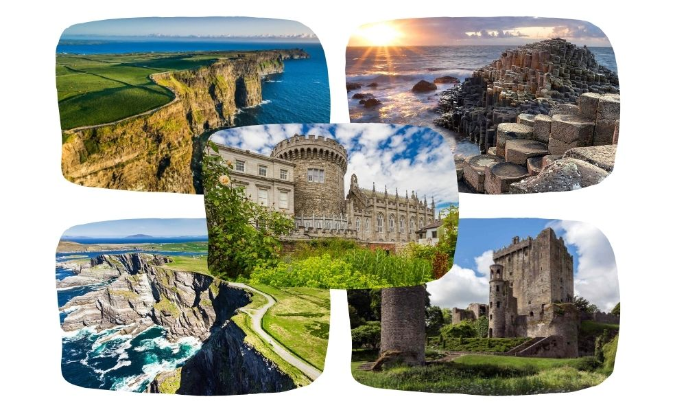

Tourist
Attractions
Cliffs of Moher
Giant's Causeway
- A UNESCO World Heritage site in County Antrim, Northern Ireland, famous for its unique basalt
columns formed by ancient volcanic activity.
Ring of Kerry
- A scenic drive through County Kerry, showcasing Ireland's picturesque landscapes, charming
villages, and historic sites like Muckross House and Gardens.
Blarney Castle
- Situated in County Cork, this medieval stronghold is home to the famous Blarney Stone, which
legend says gives the gift of eloquence to those who kiss it.
Dublin Castle
- Located in the heart of
Dublin, this historic castle has been a key site for Irish history and governance since the 13th
century
and now serves as a major government complex and tourist attraction.
Historical Facts
Battle of Clontarf
(1014)
- This pivotal battle near Dublin saw High King Brian Boru defeat the Vikings, altering the course
of Irish history.
Easter Rising (1916)
- A major uprising in Dublin against British rule, leading to the establishment of the Irish
Republic.
The Great Famine
(1845-1852)
- A devastating period of mass starvation and emigration, primarily affecting the west and south of
Ireland, with significant historical sites in County Mayo and County Galway.
Home Rule Act (1914)
- Passed by the British , granting limited self-government to Ireland; significant debates and
events
took place in Dublin.
Battle of the Boyne (1690)
- Fought near Drogheda in County Meath, this battle was a key moment in the conflict between
Catholic King James II and Protestant King William III.
Famous Pubs
Temple Bar (Dublin)
- An iconic pub in the heart of Dublin's cultural quarter, known for its lively atmosphere and
traditional Irish music.
O'Connell's Bar (Galway)
- Famous for its eclectic interior and vibrant beer garden, offering a true Galway pub
experience.
The Crown Liquor Saloon (Belfast)
-
A historic Victorian gin palace in Belfast, renowned for its ornate décor and authentic
charm.
Mutton Lane Inn (Cork)
-
A cozy, candle-lit pub in Cork, popular for its intimate setting and extensive beer
selection.
Dick Mack's Pub (Dingle)
- A unique pub in County Kerry, blending a traditional bar with a leather shop, known for its
whiskey
collection and live music.
Must-Go Tours
Wild Atlantic Way Tour
- A guided tour along Ireland's west coast, exploring rugged landscapes, picturesque villages, and
historical sites.
Game of Thrones Tour (Northern Ireland)
-
Visit iconic filming locations from the hit series, including the Dark Hedges and Ballintoy
Harbour.
Dublin Historical Walking Tour
- A comprehensive tour of Dublin's historic landmarks, including Trinity College, Dublin Castle, and
St.
Patrick's Cathedral.
Connemara and Kylemore Abbey Tour
-
Explore the stunning Connemara region and visit the beautiful Kylemore Abbey and Gardens.
Kilkenny Medieval Mile Tour
- Discover Kilkenny's medieval history through its narrow streets, historic buildings, and Kilkenny
Castle.